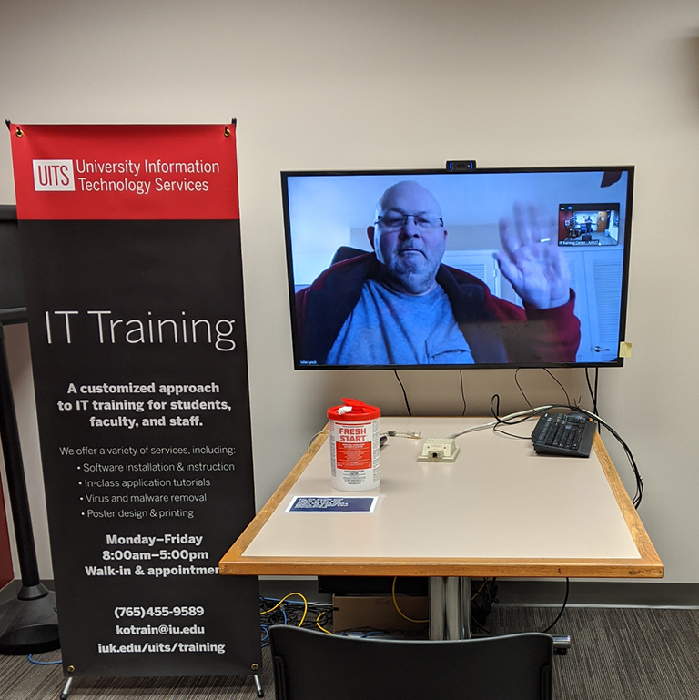
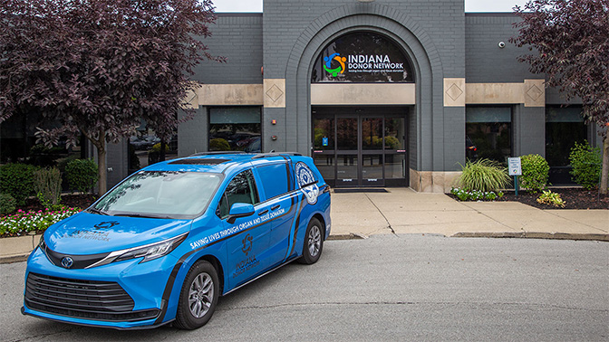
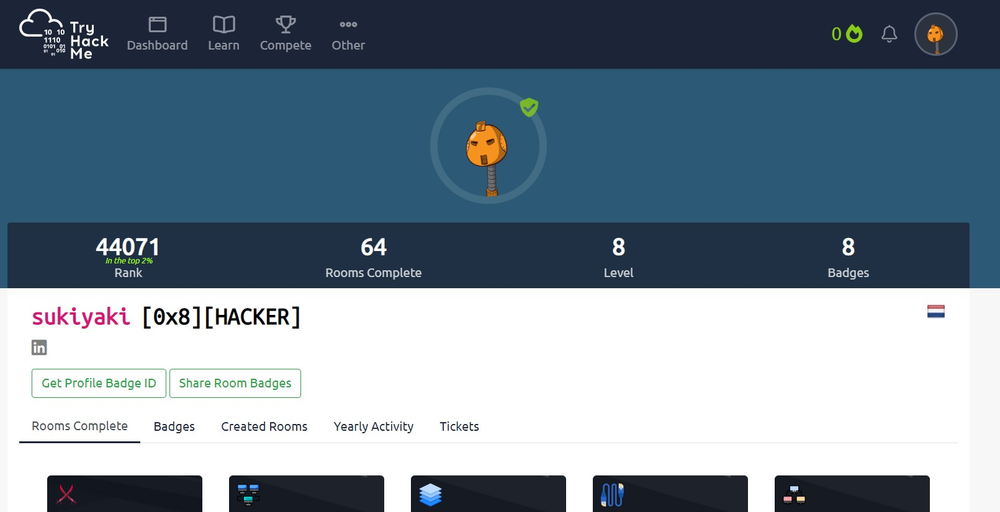
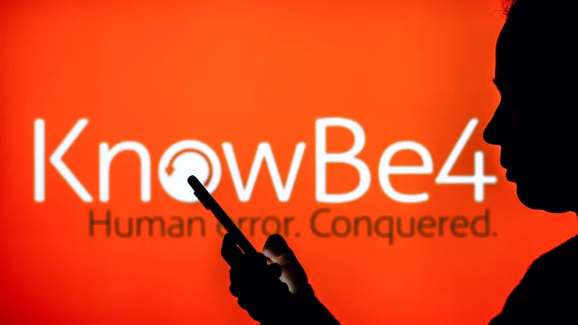
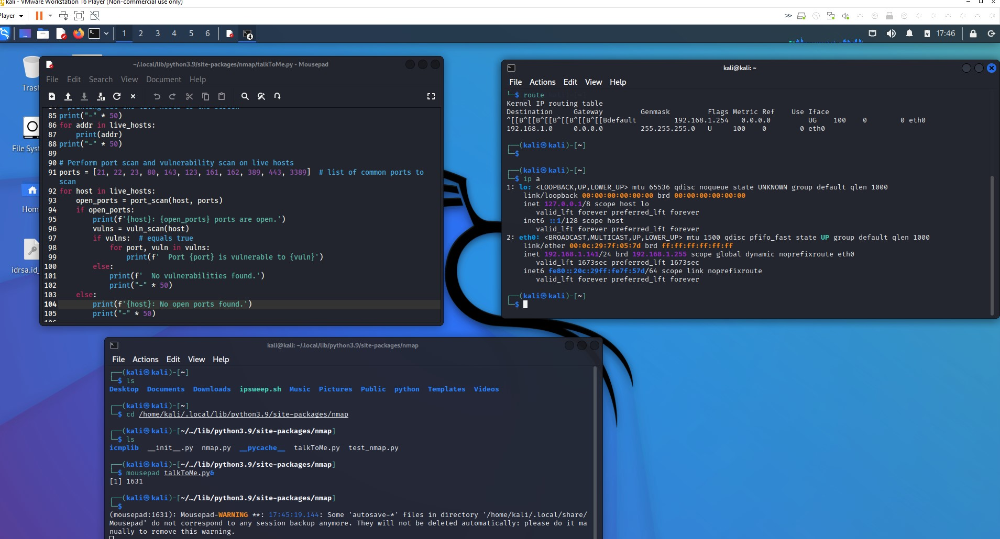
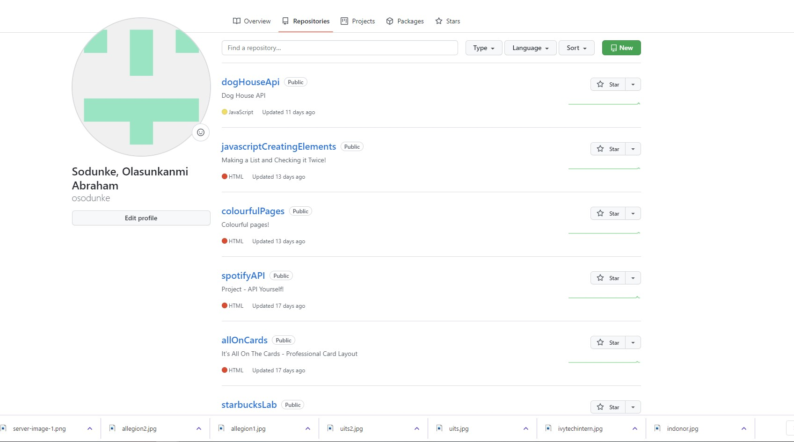

Cybersecurity Analyst Intern
Allegion
A cybersecurity analyst is a trained cyberprofessional who specializes in network and IT infrastructure security.
I will be starting my internship this summer

Information Technology Consultant
University Information Technology Services
Provide support to clients with troubleshooting and technical guidance to resolve
issues reported for numerous service areas (university
technologies and all computer-related problems)

Information Systems Intern
Indiana Donor Network
Installed, configured, and maintained company-issued computers, Windows networks, Apple workstations, VPNs, file servers, network
cabling, and other related devices, and systems
Student Intern IT
Ivy Tech Community College
Collaborate with internal teams to install, configure, and maintain computer systems fostering a learning environment for practical classes.

Tryhackme
Ranked among the top 2% students on TryHackme; Completed multiple rooms and learning paths (Hashcat, Nmap, Nessus, Metasploit, etc.)
Fog Project
Designed an isolated FOG server using ubuntu which is currently being used to deploy Windows and MacOS for company- issued computers

Knowbe4 Audit and Restructure
Redesigned multiple training courses and revised in-class phishing simulations for 258 employees to raise the company’s security awareness

Finland: Providing Digital Services to International Users
Built the website which consisted of three main webpages(Home, Resources and Contact )that will be used to host and save the DEI workshop's contents.
Workspace Setup
Responsible for setting up a neatly organized workspace --installing Monitors, Keyboard and peripherals for over 315 employess.

Cybersecurity projects
Created multiple programs like a Password Generator & Cracker, a simple API client, a license plate generator, a simple Port scanner, a Ping
Sweeper to check for hosts in a LAN, calculator for employees to reduce payroll calculations by 10%; fixed Python debugging exercises.

JavaScript & Website Design
Click here: Github Link
Created multiple responsive websites like a mini-pinterest & a fast-food restaurant with implementation of JavaScript, HTML & CSS styling.
link to github above

Phishing Email Management
Phishing E-mail Management; Analyzed over 2250 E-mail headers for Phishing & Spam attempts and generated block lists at Indiana Donor Network.